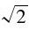

检查是否非数值
概要
isNaN(x)
参数
x
要检测的值。
返回
如果x不是数值，或者是NaN这个特殊数值时，返回true。如果x是其他任何数值，则返回false。
描述
"NaN"是"not-a-number"（不是数值）的缩写。全局变量NaN保存的是一个特殊数值（即NaN），代表无效数值（比如0/0）。isNaN()检测其参数是否不是数值。如果x是数值，或者可以转换为数值，但不是NaN，则返回false。如何x不是数值，或者不可转换为数值，或者等于NaN，则返回true。
NaN有一个独特的特性：它不等于任何值，也不等于自己。因此，如果想专门测试一个值是不是NaN（不是普通意义上的非数值），不要使用x===NaN：这会永远为false。而应该使用x!==x：只有当x是NaN时，该表达式才为true。
使用isNaN()的常见场景是用来检测parseFloat()和parseInt()的结果，以判断它们是否为有效数值。
示例
isNaN(0);//=＞false
isNaN(0/0);//=＞true
isNaN(parseInt("3"));//=＞false
isNaN(parseInt("hello"));//=＞true
isNaN("3");//=＞false
isNaN("hello");//=＞true
isNaN(true);//=＞false
isNaN(undefined);//=＞true
参阅
isFinite()、NaN、Number.NaN、parseFloat()、parseInt()
ECMAScript 5
JSON解析与字符串化
描述
JSON是一个简单对象，用做ECMAScript 5中全局函数JSON.parse()与JSON.stringify()的命名空间。JSON不是构造函数。在ECMAScript 5之前，JSON解析与序列化函数的兼容版本可以从这里下载：http://json.org/json2.js。
"JSON"表示JavaScript Object Notation（JavaScript对象标记）。JSON是一种数据序列化格式，基于JavaScript的直接量，可以表示null值、布尔值true和false、浮点数（使用JavaScript数值直接量）、字符串（使用JavaScript字符串直接量）、数组值（使用JavaScript数组直接量语法）以及字符串到值的映射（使用JavaScript对象直接量语法）。JSON里不能表示原始值undefined、数值NaN和Infinity。JavaScript函数、日期、正则表达式和异常错误在JSON中也不支持。
示例
//深拷贝可被JSON序列化的对象或数组
function deepcopy(o){return JSON.parse(JSON.stringify(o));}
参阅
JSON.parse()、JSON.stringify()、6.9节、http://json.org
ECMAScript 5
解析JSON格式的字符串
概要
JSON.parse(s)
JSON.parse(s,reviver)
参数
s
要解析的字符串
reviver
用来转换解析值的可选函数。
返回
一个对象、数组或原始值。该返回值从是s中解析的（有可能还被reviver修改过）。
描述
JSON.parse()是一个全局函数，用来解析JSON格式的字符串。通常，会传入一个字符串参数，JSON.parse()则返回该字符串参数表示的JavaScript值。
可以使用可选参数reviver，在返回解析值前，对其进行过滤或后期处理。如果指定了reviver函数，该函数会为从s中解析的每一个原始值（不是包含这些原始值的对象或数组）调用一次。调用reviver时带有两个参数。第一个参数是属性名——对象的属性名或转换成字符串的数组序号。第二个参数是对象属性或数组元素的原始值。reviver会作为包含原始值的对象或数组的方法来调用。在特殊情况下，如果字符串s表示的是原始值而不是更常见的对象或数组时，那么该原始值会存放在一个新创建对象的属性中，属性名是空字符串。在这种情况下，reviver会在这个新创建的对象上调用一次，第一个参数是空字符串，第二个参数则是该原始值。
reviver函数的返回值会成为属性的新值。如果reviver返回第二个参数，而该属性保持不变。如果reviver返回undefined（或根本没有返回任何值），则会从对象或数组中删除该属性，处理完后才会由JSON.parse()返回给用户。
示例
JSON.parse()的大部分使用场景都很寻常：
var data=JSON.parse(text);
JSON.stringify()函数会把Date对象转换成字符串，可以使用reviver函数再反向转换回来。下面这个例子还过滤属性名，并通过返回undefined来从结果对象中移除某些特定属性：
var data JSON.parse(text,function(name,value){//移除掉所有属性名以下划线开头的属性
if(name[0]=='_')return undefined;//如果value是ISO-8601日期格式的字符串，则把它转换为Date
if(typeof value==="string"＆＆
/^\d\d\d\d-\d\d-\d\dT\d\d:\d\d:\d\d.\d\d\dZ$/.test(value))
return new Date(value);//否则的话，就原样返回
return value
});
参阅
JSON.stringify()、6.9节
序列化对象、数组或原始值
概要
JSON.stringify(o)
JSON.stringify(o,flter)
JSON.stringify(o,flter,indent)
参数
o
要转换成JSON字符串的对象、数组或原始值。
filter
可以是一个可选函数，用来在字符串化前对值做一些替换。也可以是一个数组，包含那些需要字符串化的属性名。
indent
可选参数。需要输出格式化的可阅读代码时，使用indent参数可以指定缩进字符串或用来缩进的空格个数。如果省略该参数，返回的字符串将不带任何额外的空格，这是给编译器看的，很难直接阅读。
返回
JSON格式的字符串，代表o的值，同时通过了filter的过滤，以及根据indent进行了格式化。
描述
JSON.stringify()将原始值、对象或数组转换成一个JSON格式的字符串，该字符串随后可以被JSON.parse()解析。通常，调用该函数时只带一个参数，并返回相应字符串。
当带一个参数调用JSON.stringify()时，且该参数值仅包含对象、数组、字符串、数值、布尔值和null值时，字符串化的过程很直接明了。然而，当需要字符串化的值包含类的实例对象时，字符串化的过程就比较复杂了。当JSON.stringify()遇到带有名为toJSON()的方法的对象（或数组）时，它会调用该对象上的toJSON()方法，并使用该方法的返回值而不是该对象本身来进行字符串化。调用toJSON()时会传入一个字符串参数，该参数是对象的属性名或数组序号。Date类定义了一个toJSON()方法，使用Date.toISOString()方法来将Date转换成字符串。JavaScript的其他内置对象都没有定义toJSON()方法，不过可以为自己的类定义对应方法。注意，虽然toJSON()的方法名有将对象转换为JSON的含义，但实际上toJSON()方法可以不转换调用对象：它的作用仅仅是返回一个值，用来在字符串化的过程中，替换原始对象。
JSON.stringify()的第二个参数使得可以在字符串化的过程中添加过滤操作。该可选参数可以是函数或数组，这两种情况提供了完全不同的过滤功能。如果该参数是函数，则它是一个replacer函数，与上面描述的toJSON()方法有点类似。如果指定replacer函数，该函数会在每一个需要字符串化的值上调用。this指向定义该值的对象或数组。replacer函数的第一个参数是该对象中的对象属性名或数组序号，第二个参数则是值本身。replacer函数的返回值会替换掉需要字符串化的值。如果replacer函数返回undefined或没有任何返回值，则会在字符串化时忽略该值（以及它的数组元素或对象属性）。
如果JSON.stringify()的第二个参数是一个字符串数组（或数值数组——数值会转换为字符串），该数组会作为对象属性名。属性名不在该数组中的任何对象属性在字符串化时都会忽略掉。此外，返回的字符串中属性的顺序，会与该数组中的属性名顺序一致。
JSON.stringify()返回的通常是不带任何空格或换行符的给机器阅读的字符串。如果想输出可读性更好的字符串，需要指定第三个参数。如果指定的第三个参数是介于1～10之间的数值，则JSON.stringify()会在每一“层级”的输出插入换行符和指定个数的空格。如果指定的是非空字符串，则JSON.stringify()会插入换行符和该字符串（只取前10个字符）来缩进层级。
示例
//基本序列化
var text=JSON.stringify(data);//精确指定要序列化的字段
var text=JSON.stringify(address,["city","state","country"]);//指定replacer函数，以使得可序列化RegExp对象
var text=JSON.stringify(patterns,function(key,value){
if(value.constructor===RegExp)return value.toString();
return value;
});//或使用下面这种方式来实现同样的替换：
RegExp.prototype.toJSON=function(){return this.toString();}
参阅
JSON.parse()、6.9节
数学函数和常量
概要
Math.constant
Math.function()
常量
Math.E
常量e，自然对数的底数。
Math.LN10
10的自然对数。
Math.LN2
2的自然对数。
Math.LOG10E
e以10为底的对数。
Math.LOG2E
e以2为底的对数。
Math.PI
常量π。
Math.SQRT1_2
2的平方根的倒数。
Math.SQRT2
2的平方根。
静态函数
Math.abs()
计算绝对值。
Math.acos()
计算反余弦值。
Math.asin()
计算反正弦值。
Math.atan()
计算反正切值。
Math.atan2()
计算从X轴到指定点的角度。
Math.ceil()
对一个数字向上取整。
Math.cos()
计算余弦值。
Math.exp()
计算e的乘方。
Math.floor()
对一个数字向下取整。
Math.log()
计算自然对数。
Math.max()
返回两个数中较大的那个。
Math.min()
返回两个数中较小的那个。
Math.pow()
计算xy。
Math.random()
计算一个随机数。
Math.round()
四舍五入。
Math.sin()
计算正弦值。
Math.sqrt()
计算平方根。
Math.tan()
计算正切值。
描述
Math是一个对象，其属性为若干有用的函数和常量。这些函数和常量的引用语法如下：
y=Math.sin(x);
area=radius*radius*Math.PI;
和Date、String不同，Math不是对象的类。没有Math()构造函数，类似于Math.sin()这样的函数只是简单的函数，而不是对某个对象进行操作的方法。
参阅
Number
计算绝对值
概要
Math.abs(x)
参数
x
任意数值。
返回
x的绝对值。
计算反余弦值
概要
Math.acos(x)
参数
x
-1.0～1.0之间的一个数字。
返回
指定值x的反余弦值。返回值将介于0～π弧度之间。
计算反正弦值。
概要
Math.asin(x)
参数
x
-1.0～1.0之间的一个数字。
返回
指定值x的反正弦值。返回值将介于-π/2～π/2弧度之间。
计算反正切值
概要
Math.atan(x)
参数
x
任意数值。
返回
指定值x的反正切值。返回值将介于-π/2～π/2弧度之间。
计算从X轴到指定点的角度
概要
Math.atan2(y,x)
参数
y
指定点的Y坐标。
x
指定点的X坐标。
返回值
X轴正半轴与指定点(x,y)之间沿逆时针方向的夹角，值介于-π～π弧度之间。
描述
Math.atan2()函数计算y/x的反正切值。可以将参数y看做一个点的Y坐标，将参数x看做该点的X坐标。注意本函数中参数的顺序：Y坐标在X坐标前面。
对一个数字向上取整
概要
Math.ceil(x)
参数
x
任意数值或表达式。
返回
大于或等于x的最接近的整数。
描述
Math.ceil()执行向上取整运算，也就是说，它返回大于或等于函数参数的最接近的整数。Math.ceil()和Math.round()不同，前者总是向上取整，后者则是向上或向下取整到最接近的整数。也要注意，Math.ceil()不会将负数变成绝对值更大的负数，而是将它们向0的方向取整。
例
a=Math.ceil(1.99);//结果为2.0
b=Math.ceil(1.01);//结果为2.0
c=Math.ceil(1.0);//结果为1.0
d=Math.ceil(-1.99);//结果为-1.0
计算余弦值
概要
Math.cos(x)
参数
x
一个以弧度制度量的角度。如果想将角度制转为弧度制，可以将角度制的值乘以0.017 453 293(2π/360)。
返回
指定值x的余弦值。返回值将介于-1.0～1.0之间。
数学常数e
概要
Math.E
描述
Math.E是数学常数e，自然对数的底数，近似值为2.718 28。
计算ex
概要
Math.exp(x)
参数
x
用做指数的数值或表达式。
返回
ex，e的x次方，e为自然对数的底数，近似值为2.718 28。
对一个数字向下取整
概要
Math.floor(x)
参数
x
任意数值或表达式。
返回
最接近并且小于或等于x的整数。
描述
Math.floor()执行向下取整操作；换句话说，它返回最接近并且小于或等于函数参数的整数值。
Math.floor()将一个浮点数向下取整到最接近的整数。它与Math.round()不同，后者会向上或向下取整到最接近的整数。也要注意Math.floor()对负数也向下（就是说，数字将更小）取整，而不是向上（更靠近0）。
例
a=Math.floor(1.99);//结果为1.0
b=Math.floor(1.01);//结果为1.0
c=Math.floor(1.0);//结果为1.0
d=Math.floor(-1.01);//结果为-2.0
数学常数loge10（即ln10）
概要
Math.LN10
描述
Math.LN10即loge10，10的自然对数。这个常量的近似值为2.302 585 092 994 045 901 1。
数学常量loge2
概要
Math.LN2
描述
Math.LN2即loge2，2的自然对数。这个常量的近似值为0.693 147 180 559 945 286 23。
计算自然对数
概要
Math.log(x)
参数
x
任何大于0的数值或表达式。
返回
x的自然对数。
描述
Math.log()计算logex，它的参数的自然对数。参数必须大于0。
可以按下面的公式计算以10为底或以2为底的对数。
这两个公式可翻译为下面的JavaScript函数：
function log10(x){return Math.LOG10E*Math.log(x);}
function log2(x){return Math.LOG2E*Math.log(x);}
数学常量log10e
概要
Math.LOG10E
描述
Math.LOG10E是log10e的值，即常数e的以10为底的对数。它的近似值为
0.434 294 481 903 251 816 67.
数学常量log2e
概要
Math.LOG2E
描述
Math.LOG2E是log2e的值，即常数e以2为底的对数。它的近似值为
1.442 695 040 888 963 387。
返回最大的参数
概要
Math.max(args...)
参数
args...
0个或多个值
返回
参数中最大的值。如果没有参数则返回-Infinity。如果任意一个参数是NaN或不可转换为数字，则返回NaN。
返回最小的参数
概要
Math.min(args...)
参数
args...
任意数量的参数。
返回
给定参数中最小的值。如果没有参数则返回Infinity。如果任意一个参数是NaN或不可转换为数字，则返回NaN。
数学常量π
概要
Math.PI
描述
Math.PI是常量π，圆周长与直径的比。它的近似值为3.141 592 653 589 79。
计算xy
概要
Math.pow(x,y)
参数
x
乘方的底数。
y
乘方的指数。
返回
x的y次方，xy。
描述
Math.pow()计算x的y次方。可以向Math.pow()传递任何值。不过，如果结果为虚数或复数，则Math.pow()将返回NaN。实践中，这意味着如果x是负数，则y应该是正的或负的整数。同样，也不要忘记过大的指数很容易导致浮点溢出并返回一个Infinity值。
返回一个伪随机数
概要
Math.random()
返回
一个大于等于0.0并小于1.0的伪随机数。
四舍五入
概要
Math.round(x)
参数
x
任意数字。
返回
最接近x的整数。
描述
Math.round()将它的参数向上或向下取整到最接近的整数。它将0.5向上取整。例如，它将2.5取整为3，将-2.5取整为-2。
计算正弦值
概要
Math.sin(x)
参数
x
一个角度，单位为弧度制。可以通过乘以0.017 453 293(2π/360)的方式，将角度转换为弧度。
返回
x的正弦值。返回值将介于-1.0～1.0之间。
计算平方根
概要
Math.sqrt(x)
参数
x
一个大于等于0的数值。
返回
x的平方根。如果x小于0则返回NaN。
描述
Math.sqrt()计算给定数字的平方根。注意，然而，也可以使用Math.pow()来计算某个数字的任意根。比如：
Math.cuberoot=function(x){return Math.pow(x,1/3);}
Math.cuberoot(8);//返回2
数学常量
概要
Math.SQRT1_2
描述
Math.SQRT1_2是的值，2的平方根的倒数。这个常数的近似值为0.707 106 781 186 547 6。
数学常量
概要
Math.SQRT2
描述
Math.SQRT2是常量，即2的平方根。这个常量的近似值为1.414 213 562 373 095。
计算正切值
概要
Math.tan(x)
参数
x
一个角度，单位为弧度制。可以通过乘以0.017 453 293(2π/360)的方式，将角度转换为弧度。
返回
给定角度x的正切值。
非数字属性
概要
NaN
描述
NaN是一个全局属性，指向一个特殊的非数字值。NaN属性不可用for/in循环枚举，也不能用delete操作符删除。注意，NaN不是常量，不可将它设置为任何其他值，有些操作应谨慎地避免。
要检查一个值是否为数字，可使用isNaN()，因为NaN总是与其他值不相等，甚至与它自身也不相等。
参阅
Infinity、isNaN()、Number.NaN
数字
对象→数字
构造函数
new Number(value)
Number(value)
参数
value
正在创建的Number对象的数值，或将转换为一个数字的值。
返回
当Number()使用new操作符用做构造函数时，它将返回一个新构造的Number对象。当Number()当做函数调用而没有new操作符时，它将传入的参数转换为一个原始的数值并返回这个值（如果转换失败则返回NaN）。
常量
Number.MAX_VALUE
能表示的最大数字。
Number.MIN_VALUE
能表示的最小数字。
Number.NaN
非数字值。
Number.NEGATIVE_INFINITY
负无穷，当溢出时返回。
Number.POSITIVE_INFINITY
正无穷，当溢出时返回。
方法
toString()
使用指定的进制，将一个数字转换为字符串。
toLocaleString()
将一个数字转换为本地数字格式的字符串。
toFixed()
将一个数字转换为包含指定小数位数的字符串。
toExponential()
将一个数字转换为指数记数法，在小数点后有指定位数。
toPrecision()
将一个数字转换为字符串，使用指定数目的有效数字。根据数字的大小以及指定的有效数字位数，可能会采用指数或浮点记数法。
valueOf()
返回一个Number对象的原始值。
描述
数字是JavaScript中基本的原始数据类型。JavaScript也支持Number对象，它是一个原始数值的包装对象。在需要时，JavaScript会自动在原始形式和对象形式之间转换。可以通过Number()构造函数来显式地创建一个Number对象，虽然很少需要这样做。
Number()构造函数也可以不带new操作符使用，此时它将作为一个转换函数。以这种方式调用时，它将尝试将传入的参数转换为一个数字，并返回转换结果（一个原始数值或NaN）。
Number()构造函数也用做5个常用的数字常量的占位符：可表示的最大及最小的数字，正、负无穷大，以及特殊的NaN值。注意，这些值是Number()构造函数本身的属性，而不是各个数字对象的属性。例如，可以像下面这样使用MAX_VALUE属性：
var biggest=Number.MAX_VALUE
但不可以这样：
var n=new Number(2);
var biggest=n.MAX_VALUE
但除此之外，Number对象的toString()和其他方法也是每个Number对象的方法，而不是Number()构造函数的方法。上面提到过，在需要时JavaScript会自动将原始数值转换为Number对象，这就是说，可以对于原始数值以及Number对象使用Number方法。
var value=1234;
var binary_value=n.toString(2);
参阅
Infinity、Math、NaN
最大的数值
概要
Number.MAX_VALUE
描述
Number.MAX_VALUE是JavaScript中可以表示的最大的数。它的值约为1.79E+308。
最小的数值
概要
Number.MIN_VALUE
描述
Number.MIN_VALUE是JavaScript中可以表示的最小的数（指非常接近于0，而不是最大的负数）。它的值约为5E-324。
特殊的非数字值
概要
Number.NaN
描述
Number.NaN是一个特殊的值，表示某些数学操作（如对负数取平方根）的结果不是一个数字。parseInt()和parseFloat()在不能解析指定的字符串时也会返回这个值，类似地，可以在那些正常情况下返回有效数字的函数中返回Number.NaN来报告一个错误。
JavaScript将Number.NaN值输出为NaN。注意，NaN值与任意其他数字总是不等，包括NaN本身。因此，不能通过与Number.NaN比较的方法来检查某个值是否为非数字值，而应该使用isNaN()函数代替。在ECMAScript v1及后续的版本中，也可以使用预定义的全局属性NaN来代替Number.NaN。
参阅
isNaN()、NaN
负无穷
概要
Number.NEGATIVE_INFINITY
描述
Number.NEGATIVE_INFINITY是一个特殊的数值，当一个算术操作或数学函数产生了一个绝对值比JavaScript中能表示的最大的数还要大（也就是说，比-Number.MAX_VALUE还要小）的负数时返回该值。
JavaScript将NEGATIVE_INFINTY值显示为-Infinity。这个值在数学上表现得就像无穷大一样，例如，任何数字乘以无穷大仍然是无穷大，同时任何数字除以无穷大将得到0。在ECMAScript v1及之后的版本中，也可以使用-Infinity来代替Number.NEGATIVE_INFINITY。
参阅
Infinity、isFinite()
无穷大
概要
Number.POSITIVE_INFINITY
描述
Number.POSITIVE_INFINITY是一个特殊的数值，当一个算术操作或数学函数产生了一个比JavaScript中所能表示的最大的数还要大（也就是说，比Number.MAX_VALUE还要大）的值时返回该值。注意，如果数字“下溢”，或者说比Number.MIN_VALUE还要小时，JavaScript将把它转换为0。
JavaScript将POSITIVE_INFINITY显示为Infinity。这个值在数学上表现得就像无穷大一样，例如，任何数字乘以无穷大仍然是无穷大，同时任何数字除以无穷大将得到0。在ECMAScript v1及之后的版本中，也可以使用预定义的全局属性Infinity来代替Number.POSITIVE_INFINITY。
参阅
Infinity、isFinite()
使用指数记数法格式化一个数字
概要
number.toExponential(digits)
参数
digits
小数点之后出现的数字的数目。值可能在0～20之间，包括0及20。不同的实现环境可能会支持范围更大的值。如果省略这个参数，则需要多少数字将显示多少数字。
返回
以指数记数法表示的一个数字的字符串格式，小数点前有一个数字，小数点后面有digits个数字。数字的小数部分将根据需要四舍五入或补0，以便与指定的长度相符。
异常
RangeError
digits参数太小或太大。0～20之间的值（包括0和20）不会产生RangeError。不过，不同的实现环境可能会支持更大或更小的值。
TypeError
这个方法在一个非Number对象上调用。
示例
var n=12345.6789;
n.toExponential(1);//返回1.2e+4
n.toExponential(5);//返回1.23457e+4
n.toExponential(10);//返回1.2345678900e+4
n.toExponential();//返回1.23456789e+4
参阅
Number.toFixed()、Number.toLocaleString()、Number.toPrecision()、Number.toString()
使用定点记数法格式化一个数字
概要
number.toFixed(digits)
参数
digits
小数点之后要显示的数字的数量，值可能在0～20之间，包括0和20，不同的实现环境可能支持更大或更小的值。如果省略这个参数，则相当于传入了0。
返回
一个数字的字符串格式，不使用指数记数法，在小数点后有指定的digits个数字。根据需要，这个数字将四舍五入，或者小数部分补0，以便符合指定的长度。如果数字大于1e+21，则这个方法将简单地调用Number.toString()并返回一个指数记数法格式的字符串。
异常
RangeError
digits参数太小或太大。0～20之间的值（包括0和20）不会产生RangeError。不过，不同的实现环境可能会支持更大或更小的值。
TypeError
这个方法在一个非Number对象上调用。
示例
var n=12345.6789;
n.toFixed();//返回12346：注意四舍五入，没有小数部分
n.toFixed(1);//返回12345.7：注意四舍五入
n.toFixed(6);//返回12345.678900：注意末尾添加的0
(1.23e+20).toFixed(2);//返回123000000000000000000.00
(1.23e-10).toFixed(2)//返回0.00
参阅
Number.toExponential()、Number.toLocaleString()、Number.toPrecision()、Number.toString()
将一个数字转换为本地格式的字符串
概要
number.toLocaleString()
返回
根据本地惯例格式化当前数字为一个字符串，与具体的实现有关，例如可能会影响小数点使用的标点符号或者千位分隔符。
异常
TypeError
这个方法在一个非Number对象上调用。
参阅
Number.toExponential()、Number.toFixed()、Number.toPrecision()、Number.toString()
格式化一个数字的有效数字
概要
number.toPrecision(precision)
参数
precision
返回的字符串中包含的有效数字位数。值可能在1～21之间，包括1和21。不同的实现环境可能支持更大或更小的精度值。如果省略这个参数，则将调用toString()方法来将当前数字转换为一个十进制的值。
返回
一个包含precision位有效数字的数字字符串。如果precision足够大，包括当前数字的所有整数部分，则返回值将使用定点记数法表示。其他情况下，将使用指数记数法，小数点之前有一个数字，小数点之后有precision-1个数字。根据需要，这个数字将四舍五入或末尾补0。
异常
RangeError
precision参数太小或太大。1～21之间的值，包括1和21，不会产生RangeError。不过，不同的实现环境可能支持更大或更小的值。
TypeError
这个方法在一个非Number对象上调用。
示例
var n=12345.6789;
n.toPrecision(1);//返回1e+4
n.toPrecision(3);//返回1.23e+4
n.toPrecision(5);//返回12346：注意四舍五入
n.toPrecision(10);//返回12345.67890：注意末尾补的0
参阅
Number.toExponential()、Number.toFixed()、Number.toLocaleString()、Number.toString()
将一个数字转换为字符串
概要
number.toString(radix)
参数
radix
可选参数，指定数字转换后的进制。如果省略，将使用10。不过需要注意，如果指定了这个参数，并且值不是10，那么ECMAScript标准允许返回任意值。
返回
当前数字在指定进制下的字符串形式。
异常
TypeError
这个方法在一个非Number对象上调用。
描述
Number对象的toString()方法将一个数字转换为字符串。当radix参数省略或值为10时，数字将转换为一个十进制的数字字符串。虽然ECMAScript标准不要求实现处理radix的其他值，但常用的所有实现都可以接受2～36之间的值。
参阅
Number.toExponential()、Number.toFixed()、Number.toLocaleString()、Number.toPrecision()
返回原始的数字值
重写Object.valueOf()
概要
number.valueOf()
返回
当前Number对象的原始数字值。很少需要显式地调用这个方法。
异常
TypeError
这个方法在一个非Number对象上调用。
参阅
Object.valueOf()
包含所有JavaScript对象的特性的超类
构造函数
new Object()
new Object(value)
参数
value
这个可选的参数指定一个原始的JavaScript值——一个数字、布尔值或字符串，这些值将分别转换为一个Number、Boolean或String对象。
返回
如果没有传入value参数，则这个构造函数将返回一个新创建的Object实例。如果传入一个原始value值，则构造函数将创建并返回一个原始值的Number、Boolean或String对象封装。如果不带new操作符，将Object()构造函数像函数那样调用，则它的行为将和使用new操作符时一样。
属性
constructor
引用当前对象的构造函数（一个JavaScript函数）。
方法
hasOwnProperty()
检查对象是否拥有一个指定名字的本地定义（而不是继承）的属性。
isPrototypeOf()
检查当前对象是不是指定对象的原型。
propertyIsEnumerable()
检查指定名字的属性是否存在并且可以用for/in循环枚举。
toLocaleString()
返回该对象的一个本地化的字符串表示。这个方法的默认实现只是简单地调用toString()，不过子类可以覆盖它，以便提供本地化实现。
toString()
返回该对象的一个字符串表示。Object类实现的这个方法非常宽泛，不能提供很多有用的信息。Object的子类通常会通过自定义的toString()方法来将它覆盖，以便提供更多有用的输出信息。
valueOf()
返回当前对象的原始值，如果存在原始值的话。对类型为Object的对象来说，这个方法只是简单地返回该对象本身。Object的子类（如Number、Boolean）则重载这个方法，以便返回与该对象相关的原始值。
静态方法
在ECMAScript 5中，Object构造函数也为以下全局函数提供了命令空间：
Object.create()
使用指定的原型及属性创建一个新的对象。
Object.defineProperties()
创建或配置指定对象的一个或多个属性。
Object.defineProperty()
创建或配置指定对象的某个属性。
Object.freeze()
将指定对象设置为不可改变。
Object.getOwnPropertyDescriptor()
查询指定对象的指定属性的特性。
Object.getOwnPropertyNames()
返回一个包含指定对象的所有非继承属性名的数组，包括不可枚举属性。
Object.getPrototypeOf()
返回指定对象的原型。
Object.isExtensible()
检查当前对象是否能添加到新的属性中。
Object.isFrozen()
检查当前对象是否已冻结。
Object.isSealed()
检查指定对象是否为封闭的（sealed）。
Object.keys()
返回一个包含指定对象的所有非继承可枚举属性名的数组。
Object.preventExtensions()
阻止向指定对象添加新的属性。
Object.seal()
阻止向指定对象添加新属性或删除现有属性。
描述
Object类是JavaScript语言的内置数据类型。它是所有其他JavaScript对象的超类，因此，Object类的所有方法和行为都被其他对象继承了。JavaScript中对象的基本行为的讲解在第6章。
除了上面显示的Object()构造函数，也可以用6.1节介绍的Object直接量语法来创建并初始化对象。
参阅
Array、Boolean、Function、Function.prototype、Number、String、第6章
对象的构造函数
概要
object.constructor
描述
所有对象的constructor属性都指向用做当前对象的构造函数的那个函数。例如，如果使用Array()构造函数创建一个数组a，则a.constructor是一个Array：
a=new Array(1,2,3);//创建一个对象
a.constructor==Array//值为true
constructor属性经常用于检测未知对象的类型。给定一个未知的值，可以使用typeof操作符来检查它是一个原始值还是一个对象。如果它是一个对象，则可以使用constructor属性来检查对象的类型。例如，下面的函数用于检查给定的值是否是一个数组：
function isArray(x){
return((typeof x=="object")＆＆(x.constructor==Array));
}
不过，需要注意，这个技术只对核心JavaScript中的内置对象有效，对那些宿主对象（如客户端JavaScript的Window对象等）而言则未必有效。Object.toString()方法提供了另外一种判断未知对象类型的方法。
参阅
Object.toString()
使用指定的原型和属性来创建一个对象
概要
Object.create(proto)
Object.create(proto,descriptors)
参数
proto
新创建对象的原型，可为null。
descriptors
一个可选对象，把属性名映射到属性描述符。
返回
一个新创建的对象，继承自proto，同时拥有descriptors所描述的属性。
异常
TypeError
如果proto不是对象也不是null，或者指定descriptors但它引发Object.defineProperties()抛出了一个TypeError。
描述
Object.create()创建并返回一个新的以proto为原型的对象。这意味着新对象将继承proto的属性。
如果指定可选的descriptors参数，则Objects.create()将把它指定的属性添加到新对象中，等同于调用Object.defineProperties()。使用两个参数调用Object.create(p,d)等同于：
Object.defineProperties(Object.create(p),d);
关于descriptors参数的更多细节可参考Object.defineProperties()，关于属性描述符对象的更多解释可参阅Object.getOwnPropertyDescriptor()。
注意，Object.create()不是在具体的对象上调用的方法：它是一个全局函数，需要传入一个对象。
示例
//创建一个对象，有x、y属性，同时继承属性z
var p=Object.create({z:0},{
x:{value:1,writable:false,enumerable:true,configurable:true},
y:{value:2,writable:false,enumerable:true,configurable:true},
});
参阅
Object.defineProperty()、Object.defineProperties()、Object.getOwnPropertyDescriptor()、6.1节、6.7节
创建或配置对象的多个属性
概要
Object.defineProperties(o,descriptors)
参数
o
要在其上创建或配置属性的对象。
descriptors
将属性名映射到属性描述符的对象。
返回
对象o。
异常
TypeError
如果o不是一个对象，或不能创建或配置某个指定的属性，就抛出该异常。这个函数不是原子性的：它可能在创建或配置几个属性之后，同时还有别的属性未创建或配置时抛出异常。关于可能导致TypeError的属性配置错误可参阅6.7节。
描述
Object.defineProperties()在对象o上创建或配置由descriptors指定及描述的属性。descriptors中的属性名也就是要在o上创建或配置的属性名，同时指定对应的属性的值。
Object.defineProperties()的行为非常类似Object.defineProperty()，可参阅这个函数以便了解更多细节。关于描述符对象的更多细节可参阅Object.getOwnPropertyDescriptor()。
示例
//把只读属性x和y添加到新创建的对象中
var p=Object.defineProperties({},{
x:{value:0,writable:false,enumerable:true,configurable:true},
y:{value:1,writable:false,enumerable:true,configurable:true},
});
参阅
Object.create()、Object.defineProperty()、Object.getOwnPropertyDescriptor()、6.7节
创建或配置对象的一个属性
概要
Object.defineProperty(o,name,desc)
参数
o
将在其上创建或配置属性的对象。
name
将创建或配置的属性的名字。
desc
一个属性描述符对象，描述要创建的新属性或对现有属性的修改。
返回
对象o。
异常
TypeError
如果o不是一个对象，或者指定属性不能创建（比如o不可扩展）或配置（比如该属性已经存在，并且不可配置）。关于可能导致这个函数抛出TypeError的属性配置错误列表可参阅6.7节。
描述
Object.defineProperty()使用属性描述符desc来创建或配置对象o中名为name的属性。关于属性描述符对象的描述，可参阅Object.getOwnPropertyDescriptor()。
如果o还不存在名为name的属性，则这个函数将简单地使用desc中指定的属性和值来创建一个新的属性。对于desc中未指定的属性，对应的属性值将设置为false或null。
如果name为o中一个已经存在的属性名，则Object.defineProperty()将通过改变它的值或属性来配置这个属性。在这种情况下，desc只需要包含要改变的属性，不包含的属性将不会改变。
注意这不是在具体的对象上调用的方法，它是一个全局函数，必须传入一个对象。
示例
function constant(o,n,v){//定义一个值为v的常量o.n
Object.defineProperty(o,n,{value:v,writable:false
enumerable:true,configurable:false});
}
参阅
Object.create()、Object.defineProperties()、Object.getOwnPropertyDescriptor()、6.7节
将一个对象设置为不可改变
概要
Object.freeze(o)
参数
o
要冻结的对象。
返回
现在处于冻结状态的参数对象o。
描述
Object.freeze()将o设置为不可扩展（参阅Object.preventExtensions()），同时就像Object.seal()那样，将它的所有自有属性设置为不可配置。除此之外，它也将所有非继承的数据属性设置为只读。这意味着不能向o添加新属性，同时已有的属性也不能设置或删除。冻结对象是一个永久性的操作，一旦冻结，就不能解冻。
注意，Object.freeze()只设置数据属性的可写特性，那些有对应setter函数的属性不会受到影响。还要注意，Object.freeze()不会影响继承属性。
注意这个方法不可以在具体的对象上调用，它是一个全局函数，必须传入一个对象。
参阅
Object.defineProperty()、Object.isFrozen()、Object.preventExtensions()、Object.seal()、6.8.3节
查询一个属性的特性
概要
Object.getOwnPropertyDescriptor(o,name)
参数
o
待查询其属性特性的对象。
name
待查询的属性名（或数组元素的索引）。
返回
指定对象指定属性的一个属性描述符对象，如果不存在指定属性则返回undefined。
描述
Object.getOwnPrepertyDescriptor()返回指定对象指定属性的一个属性描述符。属性描述符是一个对象，描述该属性的特性和值。细节可参阅下面的小节。注意，这个方法不可以在具体的对象上调用，它是一个全局函数，必须传入一个对象。
属性描述符
属性描述符是一个普通的JavaScript对象，描述某个属性的特性（有时也包括值）。有两种JavaScript属性。数据属性有一个值以及三个性质：可枚举性（enumerable）、可写性（writable）以及可配置性（configurable）。访问器属性（accessor property）有一个getter和/或setter方法，以及可枚举性和可配置性。
数据属性的描述符类似这样：
{
value:/*任意JavaScript值*/
writable:/*true或false*/
enumerable:/*true或false*/
configurable:/*true或false*/
}
访问器属性的描述符类似这样：
{
get:/*function或undefined：替换属性值*/,
set:/*function或undefined：替换可写性*/,
enumerable:/*true或false*/,
configurable:/*true或false*/
}
参阅
Object.defineProperty()、6.7节
返回非继承属性的名字
概要
Object.getOwnPropertyNames(o)
参数
o
一个对象。
返回
一个包含o的所有非继承属性的名字的数组，包括那些不可枚举的属性。
描述
Object.getOwnPropertyNames()返回一个包含o的所有非继承属性的名字的数组，包括那些不可枚举的属性。关于只返回可枚举属性的名字的方法可参考Objects.keys()。
注意，这个方法不可在对象上调用，它是一个全局函数，必须传入一个对象。
示例
Object.getOwnPropertyNames([])//=＞["length"]:"length"不可枚举
参阅
Object.keys()、6.5节
返回一个对象的原型
概要
Object.getPrototypeOf(o)
参数
o
一个对象。
返回
o的原型对象。
描述
Object.getPrototypeOf()返回它的参数的原型。注意这是一个全局函数，必须传入一个对象。它不是在对象上调用的方法。
示例
var p={};//一个原始对象
Object.getPrototypeOf(p)//=＞Object.prototype
var o=Object.create(p)//一个继承自p的对象
Object.getPrototypeOf(o)//=＞p
参阅
Object.create()、第6章
检查一个属性是否是继承的
概要
object.hasOwnProperty(propname)
参数
propname
包含对象的属性名的字符串。
返回
如果对象有一个指定名字的非继承的属性则返回true；如果该对象没有指定名字的属性，或者这个属性是从它的原型对象继承而来的，则返回false。
描述
如同第9章描述的，JavaScript对象可以有自己的属性，也可以从它们的原型对象那儿继承属性。hasOwnProperty()方法提供一个识别继承属性和非继承的本地属性的方法。
示例
var o=new Object();//创建一个对象
o.x=3.14;//定义一个非继承的本地属性
o.hasOwnProperty("x");//返回true：x是o的本地属性
o.hasOwnProperty("y");//返回false：o没有属性y
o.hasOwnProperty("toString");//返回false：toString属性是继承属性
参阅
Function.prototype、Object.propertyIsEnumerable()、第9章
ECMAScript 5
判断某个对象上是否可以添加新属性
概要
Object.isExtensible(o)
参数
o
待检查可扩展性的对象。
返回
如果可以向该对象添加新属性则返回true；否则返回false。
描述
如果可以向一个对象添加新的属性，则称它为可扩展的。所有对象在创建后都是可扩展的，直到它们被传入Object.preventExtensions()、Object.seal()或Object.freeze()。
注意这不是对象的方法，它是一个全局函数，必须传入一个对象。
示例
var o={};//新创建一个对象
Object.isExtensible(o)//=＞true：它是可扩展的
Object.preventExtensions(o);//将它设置为不可扩展
Object.isExtensible(o)//=＞false：现在它不可扩展了
参阅
Object.isFrozen()、Object.isSealed()、Object.preventExtensions()、6.8.3节
判断对象是否不可改变
概要
Object.isFrozen(o)
参数
o
待检测的对象。
返回
如果o已冻结并不改变则为true；否则为false。
描述
如果一个对象的所有非继承属性（除了那些带setter方法的）都为只读，或者它是封闭的（sealed），则它处于冻结状态。如果可以向一个对象添加新的（非继承的）属性，并且不可删除现有的（非继承的）属性，则称它为封闭的。Object.isFrozen()检测它的参数是否为冻结状态。对象一旦冻结就不能再解冻。
冻结一个对象的常用方法为将它传给Object.freeze()。也可以这样冻结一个对象：将它传给Object.preventExtensions()，然后用Object.defineProperty()来将它所有的属性设置为只读并且不可删除的。
注意这不是在对象上调用的方法，它是一个全局函数，必须传入一个对象。
参阅
Object.defineProperty()、Object.freeze()、Object.isExtensible()、Object.isSealed()、Object.preventExtensions()、Object.seal()、6.8.3节
判断当前对象是否为另一个对象的原型
概要
object.isPrototypeOf(o)
参数
o
任意对象。
返回
如果object是o的原型则返回true；如果o不是一个对象，或object不是o的原型则返回false。
描述
如第9章描述的，JavaScript对象从它们的原型对象中继承属性。对象的原型通过prototype属性指向创建并初始化该对象的构造函数。isPrototypeOf()方法提供一种判断某个对象是否为另一个对象的原型的方法。这个技术可用于判断对象的类。
示例
var o=new Object();//创建一个对象
Object.prototype.isPrototypeOf(o)//true：o是一个对象
Function.prototype.isPrototypeOf(o.toString);//true：toString是一个函数
Array.prototype.isPrototypeOf([1,2,3]);//true：[1,2,3]是一个数组
//执行类似检测的另一种方法
(o.constructor==Object);//true:o是由Object()构造函数创建的
(o.toString.constructor==Function);//true:o.toString是一个函数
//原型对象也有自己的原型。下面的调用返回true，说明函数对象
//不仅从Function.prototype而且从Object.prototype继承属性。
Object.prototype.isPrototypeOf(Function.prototype);
参阅
Function.prototype、Object.constructor、第9章
判断一个对象的属性是否可添加或删除
概要
Object.isSealed(o)
参数
o
待检测的对象
返回
如果o是封闭的则为true；否则为false。
描述
如果不可以向一个对象添加新的（非继承的）属性，并且现有的（非继承的）属性不可删除，则称它为封闭的。Object.isSealed()检测它的参数是否为封闭对象。对象一旦封闭，将没有办法解封。封闭一个对象的常用方法是将它传递给Object.seal()或Object.freeze()。也可以这样封闭一个对象：将它传入Object.preventExtensions()，再使用Object.defineProperty()来将将它的所有属性设置为不可删除的。
注意这不是在一个对象上调用的方法，它是一个全局函数，必须传入一个对象。
参阅
Object.defineProperty()、Object.freeze()、Object.isExtensible()、Object.isFrozen()、Object.preventExtensions()、Object.seal()、6.8.3节
返回自有的可枚举属性名
概要
Object.keys(o)
参数
o
一个对象。
返回
一个包含o的所有可枚举自有（非继承）属性的名字的数组。
描述
Object.keys()返回指定对象o的属性名组成的数组。这个数组只包含那些可枚举并且直接定义在o上的属性的名字，不包含继承的属性。（关于取得不可枚举的属性名的方法可参阅Object.getOwnPropertyNames()。）返回数组中的属性名的顺序即它们通过for/in循环枚举时的顺序。
注意这不是在一个对象上调用的方法，它是一个全局函数，必须传入一个对象。
示例
Object.keys({x:1,y:2})//=＞["x","y"]
参阅
Object.getOwnPropertyNames()、5.5.4节、6.5节
禁止在一个对象上添加新的属性
概要
Object.preventExtensions(o)
参数
o
待设置可扩展性的对象。
返回
传入的参数对象o。
描述
Object.preventExtensions()将o的可扩展性设置为false，之后将不能向它添加新的属性。这是一个永久性的改变：一旦一个对象设置为不可扩展的，它就再也不能改为可扩展的。
注意Object.preventExtensions()不会影响原型链，不可扩展的对象仍然可以获得新的继承属性。
注意这不是在一个对象上调用的方法，它是一个全局函数，必须传入一个对象。
参阅
Object.freeze()、Object.isExtensible()、Object.seal()、6.8.3节
检测某个属性是否在for/in循环中可见
概要
object.propertyIsEnumerable(propname)
参数
propname
包含对象的指定属性名的一个字符串。
返回
如果对象有一个名为propname的非继承属性，并且该属性可枚举，则返回true，这意味着这个属性可以通过该对象的for/in循环枚举。
描述
for/in语句遍历给定对象的可枚举属性。对象的属性不全是可枚举的：那些由JavaScript代码添加到对象中的属性是可枚举的，但那些内置对象的预定义的属性（如方法）通常不可枚举。propertyIsEnumerable()方法提供了一个区分可枚举与不可枚举属性的方法。不过需要注意，ECMAScript标准规定propertyIsEnumerable()不检查原型链，也就是说，这个方法只适用于对象的本地属性，除此之外，没有可用于测试继承属性的可枚举性的方法。
示例
var o=new Object();//创建一个对象
o.x=3.14;//定义一个属性
o.propertyIsEnumerable("x");//true:属性x是本地属性并且可枚举
o.propertyIsEnumerable("y");//false:o没有属性y
o.propertyIsEnumerable("toString");//false:toString属性是承继来的
Object.prototype.propertyIsEnumerable("toString");//false:不可枚举
参阅
Function.prototype、Object.hasOwnProperty()、第6章
阻止添加或删除对象的属性
概要
Object.seal(o)
参数
o
待封闭的对象。
返回
现在处于封闭状态的参数对象o。
描述
Object.seal()将o设置为不可扩展（参阅Object.preventExtensions()），同时将它的所有自有属性设置为不可配置的。它的效果为阻止添加新的属性以及阻止删除现有属性。封闭一个对象是永久性的：对象一旦封闭，就不再能解封。
注意，Object.seal()不仅将属性设置为只读的，这是Object.freeze()的功能。还要注意，Object.seal()不会影响继承属性。如果一个封闭对象的原型链中有一个非封闭对象，那么还可以添加或删除对应的继承属性。
注意这不是在一个对象上调用的方法，它是一个全局函数，必须传入一个对象。
参阅
Object.defineProperty()、Object.freeze()、Object.isSealed()、Object.preventExtensions()、6.8.3节
返回对象的本地化的字符串表示
概要
object.toString()
返回
一个表示该对象的字符串。
描述
这个方法用于返回一个表示当前对象的字符串，使用合适的本地化格式。Object类提供的默认的toLocaleString()方法只是简单地调用toString()方法，并返回后者返回的非本地化的字符串。不过要注意，其他类（包括Array、Date以及Number）都各自定义自己的这个方法的版本，用于执行本地化字符串转换。定义自己的类时，可能也需要覆盖这个方法。
参阅
Array.toLocaleString()、Date.toLocaleString()、Number.toLocaleString()、Object.toString()
定义一个对象的字符串表示形式
概要
object.toString()
返回
一个表示该对象的字符串。
描述
在JavaScript程序中一般不会经常显式地调用toString()方法。一般情况下，在对象中定义这个方法，系统会在需要时自动调用它以便将该对象转为字符串。
当对象在一个字符串上下文中使用时，JavaScript系统会调用相应的toString()方法来将该对象转为字符串。例如，把一个对象传入期望参数为字符串的函数时，这个对象会转为字符串。
alert(my_object);
类似地，当使用“+”操作符将对象与字符串连接时，对象也会转化为字符串。
var msg='My object is:'+my_object;
调用toString()方法时没有参数，返回值应该是一个字符串。为了便于使用，返回的字符串应当以某种形式与调用这个方法的对象的值相关。
在JavaScript中定义自定义类时，为这个类定义一个toString()方法是一个不错的实践。如果没有定义这个方法，则对象会从Object类继承默认的toString()方法。默认方法返回的字符串格式形如：
[objectclass]
其中class是该对象的类：值为"Object"、"String"、"Number"、"Function"、"Window"、"Document"等。有时候可以用默认的toString()方法的这个行为来判断未知对象的类型或类。不过，由于大多数对象都有自定义版本的toString()，因此一般需要在对象上显式地调用Object.toString()方法，类似这样：
Object.prototype.toString.apply(o);
注意，这个判断未知对象的技术只适用于内置对象。自定义的对象类有一个"Object"类，在这种情况下，可以使用Object.constructor属性来获得关于这个对象的更多信息。
在调试JavaScript程序时，toString()方法可能会非常有用，可以用它输出对象并查看它们的值。因此，为所创建的每个对象定义一个toString()方法是个不错的主意。
虽然toString()方法通常由系统自动调用，但有时也需要手动调用它们。比如，有时需要将某个对象显式转化为字符串，但JavaScript没有自动做这个转换时：
y=Math.sqrt(x);//计算一个数字
ystr=y.toString();//将它转化为一个字符串
注意，在这个例子中，数字有一个可用于强制转换的内置toString()方法。
其他情况下，即使在JavaScript会自动转换的上下文中，也可以选择使用toString()。显式地使用toString()有助于使代码更加清晰：
alert(my_obj.toString());
参阅
Object.constructor、Object.toLocaleString()、Object.valueOf()
给定对象的原始值
概要
object.valueOf()
返回
与指定对象关联的原始值，如果存在这样一个值的话。如果没有与该对象关联的值，则返回对象本身。
描述
对象的valueOf()方法返回与该对象关联的原始值，如果存在这样一个值的话。类型为Object的对象没有原始值，这个方法只是简单地返回该对象本身。
不过，对类型为Number的对象而言，valueOf()将返回该对象表示的原始数字值。类似地，Boolean对象会返回一个关联的原始布尔值，String对象则返回一个关联的字符串。
valueOf()方法很少需要手动调用，在需要原始值时，JavaScript会自动调用这个方法。事实上，由于有对valueOf()方法的自动调用，甚至很难区分原始值和它们的关联对象。例如，虽然typeof操作符能告诉你字符串和String对象之间的不同，但在实际应用的JavaScript代码中两者完全可以等价。
Number、Boolean以及String对象的valueOf()方法将这些包装对象转化为它们所表示的原始值。传入数字、布尔值、字符串到Object()构造函数时则进行相反的操作：它将原始值包装到一个合适的对象包装中。在绝大多数情况下，JavaScript会自动处理这种原始值到对象的转换，所以很少需要这样调用Object()构造函数。
在有些情况下，你可能想为自己的对象自定义一个valueOf()方法。例如，你可能需要定义一个JavaScript对象来表示复数（一个实数加上一个虚数）。作为这个对象类型的一部分，你可能需要定义执行加法、乘法等的方法（参阅例9-3）。但你可能也想丢弃复数的虚部以便像普通实数一样处理它们。为了实现这些功能，你可能需要写类似下面的代码：
Complex.prototype.valueOf=new Function("return this.real");
为Complex对象类型定义这个valueOf()方法后，就可以，例如，将一个复数对象传入Math.sqrt()，以便计算这个复数的实部的平方根。
参阅
Object.toString()
将一个字符串转为数字
概要
parseFloat(s)
参数
s
待解析并转化为数字的字符串。
返回
解析后的数字，如果s不是以一个有效数字开头则返回NaN。在JavaScript 1.0中，如果s不能解析为数字则返回0而不是NaN。
描述
parseFloat()解析并返回s中出现的第一个数字。当parseFloat()在s中遇到一个不是该数字的有效部分的字符时，解析将终止，返回获得的值。如果s不是以parseFloat()能解析的一个数字开头，则函数将返回非数字值NaN。可以使用isNaN()函数来测试返回值。如果只想解析数字的整数部分，可使用parseInt()代替parseFloat()。
参阅
isNaN()、parseInt()
将一个字符串转换为整数
概要
parseInt(s)
parseInt(s,radix)
参数
s
要解析的字符串。
radix
一个可选的整数参数，表示该数字将解析到的进制。如果这个参数省略或值为0，则该数字将解析为十进制，如果它以0x或0X开头则将解析为十六进制。如果这个参数小于2或大于36，则parseInt()将返回NaN。
返回
解析过的数字，如果s不以一个有效的整数开头则返回NaN。在JavaScript 1.0中，parseInt()在不能解析s时返回0而不是NaN。
描述
parseInt()解析并返回s中出现的第一个数字（可以以一个减号开头）。当parseInt()在s中遇到一个不是指定的进制的有效数字的字符时，解析将终止，同时返回得到的值。如果s不是以parseInt()能解析的一个字符开头，则本函数将返回非数字值NaN。可以使用isNaN()函数来测试返回的值。
radix参数指定要使用的进制。使用10将让parseInt()解析十进制数；值8则指定解析一个八进制数（使用数字0～7）；值16则指定一个十六进制的值，使用数字0～9以及字母A～F。radix可以是2～36之间的任意值。
如果radix是0或未指定，则parseInt()将尝试判断自s解析出的数字的进制。如果s以0x开头（之前可以有一个减号），则parseInt()将把s剩余的部分解析为一个十六进制数。在其他情况下，parseInt()将把s解析为一个十进制数。
示例
parseInt("19",10);//返回19(10+9)
parseInt("11",2);//返回3(2+1)
parseInt("17",8);//返回15(8+7)
parseInt("1f",16);//返回31(16+15)
parseInt("10");//返回10
parseInt("0x10");//返回16
参阅
isNaN()、parseFloat()
当一个数字超出合法的范围时抛出
对象→错误→RangeError
构造函数
new RangeError()
new RangeError(message)
参数
message
提供关于异常的细节信息的可选错误消息。如果指定，则这个参数将用做当前RangeError对象的message属性的值。
返回
一个新构造的RangeError对象。如果指定message参数，则Error对象将把它作为其message属性的值；在其他情况下，它将使用预设的默认值作为这个属性的值。不使用new操作符，像调用函数一样调用RangeError()构造函数时，它的行为和使用new操作符调用时一样。
属性
message
提供了关于当前异常的细节的错误消息。这个属性的值为传入构造函数的字符串或者预定义的默认字符串。细节可参阅Error.message。
name
一个指定异常类型的字符串。所有RangeError对象的这个属性都继承自值"RangeError"。
描述
当一个数值不在合法的范围内时，将抛出RangeError类的一个实例。例如，将数组的长度设置为负数将抛出一个RangeError。关于抛出及捕获异常的细节可参阅Error。
参阅
Error、Error.message、Error.name
读取不存在的变量时抛出
构造函数
new ReferenceError()
new ReferenceError(message)
参数
message
一条可选的错误消息，用于提供关于该异常的细节。如果指定，这个参数将用做当前ReferenceError对象的message属性的值。
返回
一个新构造的ReferenceError对象。如果指定message参数，则对应的Error对象将把它用做自己的message属性的值；在其他情况下，它将使用预定义的默认字符串作为message属性的值。不使用new操作符，像调用函数一样调用ReferenceError()构造函数时，它的行为和使用new操作符调用时一样。
属性
message
一条提供关于该异常的细节的错误消息。这个属性的值为传入构造函数的字符串或者是预定义的默认字符串。细节可参阅Error.message。
name
一个指定异常类型的字符串。所有ReferenceError对象的这个属性都继承自值"ReferenceError"。
描述
试图读一个不存在的变量的值时将抛出一个ReferenceError类。关于异常的抛出和捕获的细节可参阅Error。
参阅
Error、Error.message、Error.name
用于模式匹配的正则表达式
直接量语法
/pattern/attributes
构造函数
new RegExp(pattern,attributes)
参数
pattern
一个指定正则表达式的模式的字符串或另一个正则表达式。
attributes
一个可选字符串，包含任意"g"、"i"以及"m"属性，分别指定全局、区分大小写以及多行匹配。在ECMAScript标准化之前"m"属性不可用。如果pattern参数是一个正则表达式而不是字符串，则这个参数必须省略。
返回
一个新的RegExp对象，内容为指定的模式及标志。如果pattern参数是一个正则表达式而不是一个字符串，则RegExp()构造函数将使用和指定的RegExp一样的模式及标志来创建一个新的RegExp对象。如果不带new操作符，像调用函数一样调用RegExp()，则它的行为和带new操作符调用时一样，不过，当pattern是一个正则表达式时有所不同，在这种情况下，它只是简单地返回pattern，而不会新创建一个RegExp对象。
异常
SyntaxError
如果pattern不是一个合法的正则表达式，或attributes参数包含除"g"、"i"以及"m"外的字符。
TypeError
如果pattern是一个RegExp对象，同时没有省略attributes参数。
实例属性
global
当前RegExp对象是否有"g"属性。
ignoreCase
当前RegExp对象是否有"i"属性。
lastIndex
最后匹配的字符的位置，用于在字符串中找到多个匹配的情况。
multiline
当前RegExp对象是否有"m"属性。
source
对应正则表达式的源文本。
方法
exec()
执行强大的、通用的模式匹配。
test()
测试一个字符串是否包含某个模式。
描述
RegExp对象代表一个正则表达式，这是一个用于在字符串上执行强大的模式匹配的工具。关于正则表达式的语法及使用的完整细节可参阅第10章。
参阅
第10章。
通用的模式匹配
概要
regexp.exec(string)
参数
string
要搜索的字符串。
返回
一个包含匹配结果的数组，如果没有找到匹配内容则为null。返回的数组的格式的描述见下面。
抛出
TypeError
如果在非RegExp对象上调用这个方法。
描述
exec()是所有RegExp和String模式匹配方法中最强大的一个。它是一个通用的方法，某些地方用起来比RegExp.test()、String.search()、String.replace()以及String.match()更复杂。
exec()在string中搜索匹配regexp的文本。如果它找到一个匹配项，它将返回一个由匹配结果组成的数组；否则，它将返回null。返回数组的元素0是匹配的文本。元素1是匹配regexp中第一个带圆括号的子表达式的文本，如果存在这样的子表达式的话。元素2包含匹配第二个子表达式的文本，依次类推。和通常一样，数组的length属性指定该数组中包含的元素个数。除了数组元素和length属性外，exec()返回的值还有另外两个属性。index属性指定匹配的文本的第一个字符的位置。input属性则指代string。在一个非全局的RegExp对象上调用时，本函数返回的数组和String.match()方法返回的数组一样。
在一个非全局的模式上调用exec()时，它将执行搜索并返回前面描述的结果。不过，如果regexp是一个全局正则表达式，exec()的行为将稍微复杂一点。它从regexp的lastIndex属性指定的位置开始搜索，当它找到一个匹配项时，它将lastIndex设置为该匹配之后的第一个字符的位置。这意味着可以重复调用exec()，以便循环遍历一个字符串中所有的匹配项。如果exec()找不到匹配项，它将返回null并将lastIndex重置为0。如果在成功地找到一个字符串的匹配项后，立刻开始搜索一个新的字符串，就必须小心地手动将lastIndex重置为0。
注意，exec()总是包含它返回的数组中的每一个匹配项的全部细节，无论regexp是否为一个全局模式。这是exec()和String.match()不同的地方，后者在使用全局匹配时只返回很少的信息。要想获得一个全局模式的完整匹配信息，唯一的方法是在一个循环中重复调用exec()方法。
示例
可以在一个循环中使用exec()来在一个字符串中找到所有匹配项。例如：
var pattern=/\bJava\w*\b/g;
var text="JavaScript is more fun than Java or JavaBeans!";
var result;
while((result=pattern.exec(text))!=null){
alert("Matched'"+result[0]+
"'at position"+result.index+
"next search begins at position"+pattern.lastIndex);
}
参阅
RegExp.lastIndex、RegExp.test()、String.match()、String.replace()、String.search()、第10章
正则表达式是否为全局匹配
概要
regexp.global
描述
global是RegExp对象的一个只读的布尔值属性。它指定一个特殊的正则表达式是否执行全局匹配，也就是说，创建它时是否带有"g"属性。
一个正则表达式是否忽略大小写
概要
regexp.ignoreCase
描述
ignoreCase是RegExp对象的一个只读的布尔值属性。它指定一个正则表达式是否执行忽略大小写的匹配，也就是说，创建它时是否带有"i"属性。
下一个匹配开始的位置
概要
regexp.lastIndex
描述
lastIndex是RegExp对象的一个可读/写的属性。对设置"g"属性的正则表达式而言，它的值为一个数字，指定RegExp.exec()和RegExp.test()方法最后一个匹配项之后的第一个字符的位置。这些方法使用这个属性作为它们下一次搜索的开始位置。这允许重复调用这些方法，来循环遍历一个字符串中的所有匹配项。注意，那些没有设置"g"属性的非全局模式对应的RegExp对象不会使用lastIndex。
这个属性是可读/写的，所以可以在任何时候设置它，以便定义下一次搜索在目标字符串中的开始位置。exec()和test()在没找到匹配项（或另一个匹配项）时会自动将lastIndex设置为0。如果在一次成功的匹配之后搜索一个新的字符串，一般需要显式地把这个属性设置为0。
参阅
RegExp.exec()、RegExp.test()
正则表达式的文本
概要
regexp.source
描述
source是RegExp对象的一个只读字符串属性。它的值为该RegExp模式的文本内容。这个文本不包括正则表达式直接量中的分隔斜杠，也不包含"g"、"i"以及"m"属性。
测试一个字符串是否匹配一个模式
概要
regexp.test(string)
参数
string
待测试的字符串。
返回
如果string包含匹配regexp的文本则返回true；否则返回false。
异常
TypeError
如果在一个非RegExp对象上调用这个方法。
描述
test()用于测试字符串string是否包含匹配regexp的文本。如果包含，它返回true；否则，它返回false。调用一个RegExp对象r的test()方法并传入字符串s等同于下面的表达式：
(r.exec(s)!=null)
示例
var pattern=/java/i;
pattern.test("JavaScript");//返回true
pattern.test("ECMAScript");//返回false
参阅
RegExp.exec()、RegExp.lastIndex、String.match()、String.replace()、String.substring()、第10章
将一个正则表达式转换为字符串
重写Object.toString()
概要
regexp.toString()
返回
regexp的字符串表示。
异常
TypeError
如果在一个非RegExp对象上调用这个方法。
描述
RegExp.toString()方法使用正则表达式直接量的格式返回一个正则表达式的字符串表示。注意，这个方法的实现上并不要求添加转义序列，以便保证返回的字符串是合法的正则表达式直接量。设想由表达式new RegExp("/"，"g")创建的正则表达式，RegExp.toString()的一个实现可能会返回/\//g；它也可能添加一个转义序列并返回/\//g。
字符串支持
构造函数
new String(s)//构造函数
function String(s)//转换函数
参数
s
待存储到一个String对象中或转换为一个原始字符串的值。
返回
当使用new操作符将String()作为一个构造函数使用时，它将返回一个String对象，内容为字符串s或s的字符串表示。当不带new操作符调用String()构造函数时，它只是简单地将s转换为原始字符串并返回转换后的值。
属性
length
该字符串中的字符数。
方法
charAt()
取出一个字符串中指定位置的字符。
charCodeAt()
返回一个字符串中指定位置的字符的编码。
concat()
将一个或多个值连接成一个字符串。
indexOf()
在指定字符串中寻找一个字符或子串。
lastIndexOf()
在指定字符串中向后寻找一个字符或子串。
localeCompare()
使用本地定义的顺序比较字符串。
match()
使用正则表达式执行模式匹配。
replace()
使用正则表达式执行查找与替换操作。
search()
在一个字符串中查找匹配某个正则表达式的子串。
slice()
返回字符串的一个切片或子串。
split()
在指定的分隔符字符串或正则表达式处断开，将一个字符串分割为由字符串组成的数组。
substr()
提取字符串的一个子串，substring()的一个变体。
substring()
提取字符串的一个子串。
toLowerCase()
返回指定字符串的一份副本，其中所有的字符都已转换为小写。
toString()
返回原始的字符串值。
toUpperCase()
返回指定字符串的一份副本，其中所有的字符都已转换为大写。
trim()
返回指定字符串的一份副本，其中前后的空白字符都已删除。
valueOf()
返回原始的字符串值。
静态方法
String.fromCharCode()
使用作为参数传入的字符编码创建一个新的字符串。
HTML方法
从早期的JavaScript开始，String类就定义了若干方法，将字符串置入HTML标签以返回一个修改的字符串。这些方法一直没有成为ECMAScript的标准，但在客户端或服务器端的JavaScript代码中动态生成HTML时非常有用。如果想使用非标准的方法，可以使用类似这样的代码来创建一个粗体的红色的超链接的HTML源码：
var s="click here!";
var html=s.bold().link("javascript:alert('hello')").fontcolor("red");
由于这些不是标准方法，因此在接下来的页面中它们没有单独的参考条目：
anchor(name)
返回该字符串的一个副本，在一个＜a name=＞环境中。
big()
返回该字符串的一个副本，在一个＜big＞环境中。
blink()
返回该字符串的一个副本，在一个＜blink＞环境中。
bold()
返回该字符串的一个副本，在一个＜b＞环境中。
fixed()
返回该字符串的一个副本，在一个＜tt＞环境中。
fontcolor(color)
返回该字符串的一个副本，在一个＜font color=＞环境中。
fontsize(size)
返回该字符串的一个副本，在一个＜font size=＞环境中。
italics()
返回该字符串的一个副本，在一个＜i＞环境中。
link(url)
返回该字符串的一个副本，在一个＜a href=＞环境中。
small()
返回该字符串的一个副本，在一个＜small＞环境中。
strike()
返回该字符串的一个副本，在一个＜strike＞环境中。
sub()
返回该字符串的一个副本，在一个＜sub＞环境中。
sup()
返回该字符串的一个副本，在一个＜sup＞环境中。
描述
String是JavaScript中的一种原始数据类型。String类类型提供了若干操作原始字符串值的方法。String对象的length属性指定该字符串中的字符的个数。String类也定义若干操作字符串的方法，例如，有一些从字符串中提取字符或子串的方法，还有一些从字符串中搜索字符或子串的方法。注意，JavaScript的字符串是不可变的：String类的所有方法都不允许改变某个字符串的内容。那些像String.toUpperCase()之类的方法返回一个全新的字符串，而没有修改原始字符串。
在ECMAScript 5以及许多早于ES5的JavaScript实现中，字符串的行为类似于每个元素为一个单字符的字符串中只读数组。例如，要提取字符串s的第三个字符，可以使用s[2]来代替s.charAt(2)。在一个字符串上使用for/in语句时，它将遍历该字符串中的每一个字符。
参阅
第3章。
取得一个字符串中第"n"个字符
概要
string.charAt(n)
参数
n
希望返回的字符在字符串string中的索引。
返回
字符串string的第n个字符。
描述
String.charAt()返回字符串string中的第n个字符。字符串的第一个字符的编号为0。如果n不在0～string.length-1之间，这个方法将返回一个空字符串。注意，JavaScript中并没有字符数据类型，所以返回的字符实际上是一个长度为1的字符串。
参阅
String.charCodeAt()、String.indexOf()、String.lastIndexOf()
取得字符串中第n个字符的编码
概要
string.charCodeAt(n)
参数
n
待返回编码的字符的索引。
返回
string中第n个字符的Unicode编码。返回的值是一个16位的整数，值在0～65 535之间。
描述
charCodeAt()类似charAt()，不同之处是它返回指定位置的字符的编码，而不返回包含该字符的子串。如果n为负数或大于等于字符串的长度，则charCodeAt()将返回NaN。
关于从Unicode编码创建字符串的方法可参阅String.fromCharCode()。
参阅
String.charAt()、String.fromCharCode()
连接字符串
概要
string.concat(value,...)
参数
value,...
一个或多个待连接为字符串的值。
返回
由每个参数连接为string而组成的新的字符串。
描述
concat()将它的每个参数转换为字符串（如果必要的话）并将它们按顺序追加到string的末尾。它返回最后的连接结果。注意string本身没有被改变。
String.concat()与Array.concat()类似。注意使用“+”操作符来执行字符串连接经常更简单一些。
参阅
Array.concat()
从字符编码创建一个字符串
概要
String.fromCharCode(c1,c2,...)
参数
c1,c2,...
指定待创建字符串中的字符的Unicode编码，一个或多个整数。
返回
一个新的字符串，内容为指定编码对应的字符。
描述
这个静态方法提供一个通过指定每个字符的Unicode编码数字来创建字符串的方式。注意，作为一个静态方法，fromCharCode()是String()构造函数的一个属性，实际上不是字符串或String对象的方法。
String.charCodeAt()与这个方法对应，它提供一个取得指定字符串中单个字符的编码的方法。
示例
//创建字符串"hello"
var s=String.fromCharCode(104,101,108,108,111);
参阅
String.charCodeAt()
搜索一个字符串
概要
string.indexOf(substring)
string.indexOf(substring,start)
参数
substring
要在string中搜索的子串。
start
一个可选的整数参数，指定该次搜索在字符串string中的开始位置。合法的值为0（字符串中的第一个字符的位置）到string.length-1（字符串中最后一个字符的位置）。如果省略了这个参数，则搜索将从给定字符串的第一个字符开始。
返回
在字符串string中start位置之后，substring第一次出现的位置，如果没有找到则返回-1。
描述
String.indexOf()搜索指定的字符串string，从前到后搜索，检查它是否包含指定的子串substring。搜索开始于string中的start位置，如果没有指定start则从string的开头开始搜索。如果发现了子串substring，则String.indexOf()将返回substring在string中第一次出现时第一个字符所在的位置。string中字符的位置从0开始编号。
如果在string中没有找到substring，则String.indexOf()返回-1。
参阅
String.charAt()、String.lastIndexOf()、String.substring()
从后面开始搜索一个字符串
概要
string.lastIndexOf(substring)
string.lastIndexOf(substring,start)
参数
substring
要在字符串string中搜索的子串。
start
一个可选的整数参数，指定string中搜索开始的位置。合法值为0（该字符串中第一个字符的位置）到string.length-1（该字符串中最后一个字符的位置）。如果省略这个参数，它将从字符串string的最后一个字符开始搜索。
返回
子串substring在字符串string的start位置之前最后一次出现的位置，如果没有找到则返回-1。
描述
String.lastIndexOf()从字符串string的结尾开始搜索到开头，检查它是否包含子串substring。搜索开始于字符串string中的start位置，如果没有指定start则开始于string的尾部。如果找到子串substring，则String.lastIndexOf()将返回该子串的第一个字符的位置。由于本方法从字符串string的末尾搜索到开头，因此找到的第一个匹配子串将是string中start位置前的最后一个匹配。
如果没有找到指定子串，则String.lastIndexOf()将返回-1。
注意，虽然String.lastIndexOf()从字符串string的末尾搜索到开始，它仍然将string中的字符从开头开始编号。string中的第一个字符的位置为0，最后一个的位置为string.length-1。
参阅
String.charAt()、String.indexOf()、String.substring()
一个字符串的长度
概要
string.length
描述
String.length属性是一个只读的整数，指明指定的字符串string中的字符个数。对任意字符串s来说，最后一个字符的索引都是s.length-1。字符串的length属性不会在for/in循环中枚举，也不可通过delete操作符删除。
使用本地特定的顺序比较两个字符串
概要
string.localeCompare(target)
参数
target
要与string使用区分地区设置的方式比较的字符串。
返回
一个表示比较结果的数字。如果string比target“小”，则localCompare()将返回一个比0小的数。如果string比target“大”，则本方法将返回一个比0大的数。如果这两个字符串相同，或者根据本地顺序约定无法区分，则本方法返回0。
描述
当在字符串上使用“＜”或“＞”操作符时，它们只比较这些字符的Unicode编码，而不考虑本地的顺序。这种方式产生的顺序并不总是正确。比如，在西班牙语中，字母"ch"习惯上当做一个单独的字母，排在字符"c"和"d"之间。
localeCompare()提供了一个根据默认的本地排序来比较字符串的方法。ECMAScript标准没有指定本地化比较如何完成，这个函数利用底层的操作系统提供的排序。
示例
下面的代码将使用本地化顺序来排序一个字符串数组：
var strings;//待排序的字符串数组，已在别处初始化
strings.sort(function(a,b){return a.localeCompare(b)});
找到一个或多个正则表达式匹配结果
概要
string.match(regexp)
参数
regexp
一个指定要匹配的模式的RegExp对象。如果这个参数不是一个RegExp对象，则它将先被传入RegExp()构造函数，后转换为RegExp对象。
返回
一个包含匹配结果的数组。数组的内容取决于regexp是否设置了"g"属性。关于返回值的细节在下面的描述部分。
描述
match()在字符串string中寻找一个或多个regexp的匹配结果。这个方法的行为取决于regexp是否有"g"属性（关于正则表达式的完整细节请参阅第10章）。
如果regexp没有"g"属性，match()将只在string中执行一次匹配。如果没有找到匹配结果，match()将返回null。在其他情况下，它将返回一个包含它所发现的匹配结果的信息的数组。该数组的元素0为匹配文本，剩下的元素为匹配正则表达式中的圆括号子表达式的文本。除了这些常规的数组元素，这个返回的数组还有两个额外的对象属性。其中index属性指明了匹配文本在string中的开始位置；input属性则是对该string本身的引用。
如果regexp有"g"标志，则match()将执行一次全局搜索，在string中寻找所有匹配的子串。如果没有找到匹配结果则返回null，如果找到一个或多个匹配结果则返回一个数组。然而，全局匹配返回的数组的内容与非全局匹配返回的数组内容很不一样。在全局匹配的情况下，数组元素包含string中的每一个匹配子串，同时返回的数组没有index和input属性。注意对于全局匹配，match()不会提供关于圆括号子表达式的信息，也不会记录每个匹配子串在string中的位置。如果希望在全局搜索时取得这些信息，可以使用RegExp.exec()。
示例
下面的全局匹配将找出一个字符串中的所有数字：
"1 plus 2 equals 3".match(/\d+/g)//返回["1","2","3"]
下面的非全局匹配使用更复杂的带有圆括号子表达式的正则表达式。它匹配一个URL，其子表达式则匹配对应的协议、主机以及该URL的路径部分：
var url=/(\w+):\/\/([\w.]+)\/(\S*)/;
var text="Visit my home page at http://www.isp.com/～david";
var result=text.match(url);
if(result!=null){
var fullurl=result[0];//包含"http://www.isp.com/～david"
var protocol=result[1];//包含"http"
var host=result[2];//包含"www.isp.com"
var path=result[3];//包含"～david"
}
参阅
RegExp、RegExp.exec()、RegExp.test()、String.replace()、String.search()、第10章
替换匹配给定正则表达式的（一个或多个）子串
概要
string.replace(regexp,replacement)
参数
regexp
指定了要替换的模式的RegExp对象。如果这个参数是一个字符串，它将用做一个要搜索的直接量文本模式；它将不会先转化为RegExp对象。
replacement
一个内容为替换文本的字符串，或者一个函数，用于在调用时生成对应的替换文本。细节可参阅描述部分。
返回
一个新的字符串，其中匹配regexp的第一个或所有的地方已替换为replacement。
描述
replace()在字符串string上执行查找与替换的操作。它在string中搜索一个或多个匹配regexp的子串并使用replacement替换。如果regexp指定全局属性"g"，则replace()将替换所有匹配的子串。在其他情况下，它只替换第一个匹配的子串。
replacement可以是一个字符串或一个函数。如果它是一个字符串，则每个匹配子串都将替换为该子串。注意replacement字符串中的$字符有特殊含义。就像下表显示的，它表示模式匹配中的一个字符串将在替换中使用。
ECMAScript第3版定义replace()的replacement参数可以用一个函数来代替字符串。在使用函数的情况下，这个函数将在每个匹配结果上调用，它返回的字符串则将作为替换文本。传入该函数的第一个参数是匹配该模式的字符串。接下来的参数是匹配该模式中的某个圆括号子表达式的字符串，可能有0个或多个这样的参数。下一个参数则是一个整数，指定String中出现匹配结果的位置，最后一个参数是string本身。
示例
确保单词"JavaScript"的大小写是正确的：
text.replace(/javascript/i,"JavaScript");
将一个单独的名字从格式"Doe,John"转换为"John Done"格式：
name.replace(/(\w+)\s*,\s*(\w+)/,"$2$1");
将所有双引号替换为成对的前后单引号：
text.replace(/"([^"]*)"/g,"''$1''");
将一个字符串中所有单词的首字母大写：
text.replace(/\b\w+\b/g,function(word){
return word.substring(0,1).toUpperCase()+
word.substring(1);
});
参阅
RegExp、RegExp.exec()、RegExp.test()、String.match()、String.search()、第10章
根据一个正则表达式查找
概要
string.search(regexp)
参数
regexp
一个RegExp对象，指定要在字符串string中查找的模式。如果这个参数不是一个RegExp，它将先传入RegExp()构造函数，后转换为一个RegExp对象。
返回
string中第一个匹配regexp的子串的开始位置，如果没有找到匹配则返回-1。
描述
search()在string中寻找匹配regexp的子串，并返回匹配子串的第一个字符的位置，如果没有找到则返回-1。
search()不执行全局匹配，它会忽略g标志。它也会忽略regexp的lastIndex属性，总是从string的开始位置开始搜索，这意味着它总是返回string中第一个匹配子串的位置。
示例
var s="JavaScript is fun";
s.search(/script/i)//返回4
s.search(/a(.)a/)//返回1
参阅
RegExp、RegExp.exec()、RegExp.test()、String.match()、String.replace()、第10章
提取一个子串
概要
string.slice(start,end)
参数
start
切片开始的字符串索引。如果为负，则将从该字符串的尾部开始计算。也就是说，-1表示最后一个字符，-2表示倒数第二个字符，以此类推。
end
紧跟着切片结尾的字符串索引。如果不指定，则切片将包括从start到当前字符串结尾的所有字符。如果这个参数是负的，则将从该字符串的尾部开始计算。
返回
一个新的字符串，内容为string中自start位置开始并且包含start位置，直到但不包含end位置的所有字符。
描述
slice()返回一个字符串，内容为string的一个切片或子串。它不修改string。
String的方法slice()、substring()以及弃用的substr()都返回一个字符串的指定部分。slice()比substring()更灵活，因为它允许负参数值。slice()与substr()的不同之处是，前者通过两个字符位置来定义一个子串，而后者使用一个位置和一个长度。也请注意，String.slice()和Array.slice()非常类似。
示例
var s="abcdefg";
s.slice(0,4)//返回"abcd"
s.slice(2,4)//返回"cd"
s.slice(4)//返回"efg"
s.slice(3,-1)//返回"def"
s.slice(3,-2)//返回"de"
s.slice(-3,-1)//应该返回"ef"；但在IE 4中返回"abcdef"
bug
IE4中如果start为负数将出现错误（不过之后的IE版本中没有这个问题）。它不是从字符串的尾部开始计算，而是从位置为0的字符开始。
参阅
Array.slice()、String.substring()
将一个字符串切分为一个由字符串组成的数组
概要
string.split(delimiter,limit)
参数
delimiter
string切分处的字符串或正则表达式。
limit
这个可选的整数指定已返回数组的最大长度。如果指定，则最多返回数量为这个数字的子串。如果没有指定，则将切分整个字符串，无论结果数组有多长。
返回
一个由字符串组成的数组，通过在由delimiter界定的边界处切分string为子串创建。返回数组中的子串不包含delimiter本身，除非是下面描述部分中提到的例外情况。
描述
split()方法创建并返回一个数组，内容为至多limit个给定的字符串string的子串。这些子串是这样创建的：从string的开头搜索到结尾，在所有匹配delimiter的文本的前方及后方断开。分割文本不包含在返回的子串中，除了在本节结尾处提到的例外。
注意，如果分隔符（delimiter）匹配给定字符串的开头内容，则返回数组的第一个元素将是空字符串——出现在分隔符之前的文本。类似地，如果分隔符匹配该字符串的末尾，则返回数组的最后一个元素（假设与limit不冲突）将是空字符串。
如果没有指定delimiter，则字符串string将不会切分，返回的数组将只包含一个未切分的字符串元素。如果delimiter为空字符串或是一个匹配空字符串的正则表达式，则字符串string将在每个字符之间断开，返回的数组将与string拥有一样的长度，当然，这是在假设没有指定更小的limit的情况下。（注意这是一个特例，因为第一个字符之前和最后一个字符之后的空字符不匹配。）
就像前面提到的，本方法返回的数组中的子串不包含用来切分该字符串的分隔文本。不过，如果delimiter是一个包含圆括号表达式的正则表达式，则匹配这些圆括号表达式的子串（但不是匹配整个正则表达式的文本）将包含在返回的数组中。
注意String.split()方法是Array.join()方法的反方法。
示例
在处理高度结构化的字符串时，split()方法非常有用。例如：
"1:2:3:4:5".split(":");//返回["1","2","3","4","5"]
"|a|b|c|".split("|");//返回["","a","b","c",""]
split()方法另一个常用的场景是解析命令或类似的字符串，方法是将它们在空白处断开为单词：
var words=sentence.split('');
用正则表达式作为分隔符将字符串切分为单词更容易：
var words=sentence.split(/\s+/);
要将一个字符串切分为由字符组成的数组，可使用空字符串作为分隔符。如果只想将字符串的一个前缀切分为由字符组成的数组，可以使用limit参数：
"hello".split("");//返回["h","e","l","l","o"]
"hello".split("",3);//返回["h","e","l"]
如果希望返回的数组中包含分隔符或分隔符的一个或多个部分，可以使用带圆括号子表达式的正则表达式。例如，下面的代码将一个字符串在HTML标签处断开，同时在返回的数组中包含这些标签：
var text="hello＜b＞world＜/b＞";
text.split(/(＜[^＞]*＞)/);//返回["hello","＜b＞","world","＜/b＞",""]
参阅
Array.join()、RegExp、第10章
已弃用
提取一个子串
概要
string.substr(start,length)
参数
start
子串的开始位置。如果这个参数是负数，则将从string的尾部开始计算：-1表示最后一个字符，-2表示倒数第二个字符，以此类推。
length
该子串中的字符数。如果省略这个参数，则返回的子串将包含从开始位置到字符串结束的所有字符。
返回
string的一部分的一个副本，包含string中自start位置开始的length个字符，如果未指定length则包含自start到结尾的所有字符。
描述
substr()从string中提取并返回一个子串。它并不修改string本身。
注意，substr()通过一个开始字符的位置以及长度来指定期望取得的子串。这与String.substring()和String.splice()不同并且有时会很有用，后两者是通过指定两个字符的位置来定义一个子串。不过需要注意，这个方法不再是ECMAScript的标准，因此已弃用。
示例
var s="abcdefg";
s.substr(2,2);//返回"cd"
s.substr(3);//返回"defg"
s.substr(-3,2);//应该返回"ef";但在IE 4中返回"ab"
bug
在IE中传入负的start不会正常工作，它们不是从string的尾部开始计算字符位置，而是从位置0开始。
参阅
String.slice()、String.substring()
返回字符串的一个子串
概要
string.substring(from,to)
参数
from
一个非负整数，指定要提取的子串的第一个字符在string中的位置。
to
一个非负整数，比要提取的子串的最后一个字符的位置大1。如果省略这个参数，则返回的子串将持续到string的结尾。
返回
一个新的字符串，长度为to-from，内容为string的一个子串。新字符串的内容为string中从位置from到to-1的字符的副本。
描述
String.substring()返回string中位置from与to之间的字符组成的子串。包含位置from处的字符，但不包含位置to处的字符。
如果from等于to，则这个方法将返回一个空（长度为0的）字符串。如果from比to大，这个方法将先交换两个参数的值，然后返回它们之间的子串。
子串中包含位置from处的字符，但不包含to处的字符，记住这一点很重要。这看起来有些随意或违反直觉，不过这个体系的一个值得注意的特性是，返回的子串的长度总是等于to-from。
注意String.slice()和非标准的String.substr()也能从字符串中提取子串。但和这些方法不同，String.substring()不接受负参数。
参阅
String.charAt()、String.indexOf()、String.lastIndexOf()、String.slice()、String.substr()
将一个字符串转为小写
概要
string.toLocaleLowerCase()
返回
string的一个副本，其中字符都已经以本地化的方式转换为小写字母。只有一小部分语言（如土耳其语）有本地化的大小写映射，所以这个方法一般和toLowerCase()返回的内容相同。
参阅
String.toLocaleUpperCase()、String.toLowerCase()、String.toUpperCase()
将一个字符串转为大写
概要
string.toLocaleUpperCase()
返回
string的一个副本，其中字符都已经以本地化的方式转换为大写字母。只有一小部分语言（如土耳其语）有本地化的大小写映射，所以这个方法一般和toLowerCase()返回的内容相同。
参阅
String.toLocaleLowerCase()、String.toLowerCase()、String.toUpperCase()
将一个字符串转换为小写
概要
string.toLowerCase()
返回
string的一个副本，如果其中有大写字母，则大写字母都已转换为对应的小写形式。
返回对应字符串
重写Object.toString()
概要
string.toString()
返回
string的原始字符串值。很少需要调用这个方法。
异常
TypeError
如果在一个非String对象上调用这个方法。
参阅
String.valueOf()
将一个字符串转换为大写
概要
string.toUpperCase()
返回
string的一个副本，如果其中有小写字母，则小写字母都已转换为对应的大写形式。
去掉开头和结尾处的空白字符
概要
string.trim()
返回
string的一个副本，其中开头和结尾处的空白字符都已移除。
参阅
String.replace()
返回对应的字符串
重写Object.valueOf
概要
string.valueOf()
返回
string的原始字符串值。
异常
TypeError
如果在一个非String对象上调用这个方法。
参阅
String.toString()
抛出以便通知一个语法错误
构造函数
new SyntaxError()
new SyntaxError(message)
参数
message
一条可选的错误消息，提供关于该异常的详细信息。如果指定，则这个参数将用做对应的SyntaxError对象的message属性的值。
返回
一个新构造的SyntaxError对象。如果指定message参数，则该Error对象将使用它作为自己的message属性的值；在其他情况下，它将使用一个预定义的默认字符串作为该属性的值。当不使用new操作符将SyntaxError()构造函数作为一个函数调用时，它的行为和使用new操作符时一样。
属性
message
一条提供关于该异常的细节的错误消息。这个属性的值为传入构造函数的字符串的值，或者为预定义的默认字符串。细节可参阅Error.message。
name
一个指定该异常的类型的字符串。所有SyntaxError对象的这个属性的都继承自值"SyntaxError"。
描述
在JavaScript代码中，SyntaxError类的实例用于在通知语法错误时抛出。eval()方法、Function()构造函数以及RegExp()构造函数都可能抛出这种类型的异常。关于异常的抛出及捕获的细节可参阅Error。
参阅
Error、Error.message、Error.name
当一个值类型错误时抛出
构造函数
new TypeError()
new TypeError(message)
参数
message
一条可选的错误消息，提供关于该异常的细节。如果指定，这个参数将用做对应的TypeError对象的message属性的值。
返回
一个新构建的TypeError对象。如果指定message参数，则对应的Error对象将把这个参数用做它的message属性的值；在其他情况下，它将使用预定义的默认字符串作为这个属性的值。当不带new操作符将TypeError()构造函数当做一个函数调用时，它的行为和带new操作符调用时一样。
属性
message
一条提供关于该异常的细节的错误消息。这个属性的值为传入构造函数的字符串，或者为一个预定义的默认字符串。细节可参阅Error.message。
name
一个指定该异常的类型的字符串。所有TypeError对象的这个属性都继承自值"TypeError"。
描述
当一个值不是期望的类型时，将抛出TypeError类的一个实例。通常在访问一个值为null或undefined的属性时会发生这个错误。例如，如果在一个类中定义某个方法，但在另一个类的实例上调用这个方法时，或者在非构造函数上使用new操作符时，都会发生这个错误。当向内置的函数或方法传入多于预期的参数时，JavaScript实现也允许抛出TypeError对象。关于抛出和捕获异常的细节可参阅Error。
参阅
Error、Error.message、Error.name
未定义值
概要
undefined
描述
undefined是一个全局属性，值为JavaScript未定义的值。当试图读一个不存在的对象属性时，返回的就是这个值。undefined属性不可在for/in循环中枚举，也不可使用delete操作符删除。注意，undefined不是一个常量，它可以设置成其他值，但你要小心避免这样的操作。
测试一个值是否为undefined时要使用“===”操作符，因为“==”操作符会把undefined值等同于null。
已弃用
解码一个编码的字符串
概要
unescape(s)
参数
s
待解码的字符串。
返回
解码后的s的一个副本。
描述
unescape()是一个全局函数，用于解码由escape()编码的字符串。它的解码方式为：寻找s中格式为%xx及%u xxxx（这儿x是一个十六进制数字）的字符序列，并将它们替换为Unicode字符\u00 xx和\u xxxx。
虽然在第1版ECMAScript中标准化了unescape()，但在ECMAScript第3版中它已弃用并移除。ECMAScript的实现可能实现了这个函数，但这并不是必需的。应该使用decodeURI()和decodeURIComponent()来代替unescape()。更多的细节及示例可参阅escape()。
参阅
decodeURI()、decodeURIComponent()、escape()、String
URI编码或解码方法出错时抛出
对象→错误→URIError
构造函数
new URIError()
new URIError(message)
参数
message
一条可选的错误消息，提供关于该异常的详细信息。如果指定，则这个参数将用做对应的URIError对象的message属性的值。
返回
一个新构建的URIError对象。如果指定message参数，则对应的Error对象将把它用做其message属性的值；在其他情况下，它将使用一个预定义的默认字符串作为该属性的值。当不带new操作符将URIError()构造函数像一个函数一样调用时，它的行为和带new操作符调用时一样。
属性
message
一条提供关于该异常的细节的错误消息。这个属性的值为传入构造函数的字符串，或者为预定义的默认字符串。细节可参阅Error.message。
name
一个指定该异常的类型的字符串。所有的URIError对象的这个属性都继承自值"URIError"。
描述
调用decodeURI()或decodeURIComponent()时，如果指定的字符串包含不合法的十六进制编码，则将抛出URIError类的一个实例。同样，如果指定的字符串包含不合法的Unicode代理项对encodeURI()或encodeURIComponent()也会抛出这个异常。关于异常的抛出和捕获的细节可参阅Error部分。
参阅
Error、Error.message、Error.name